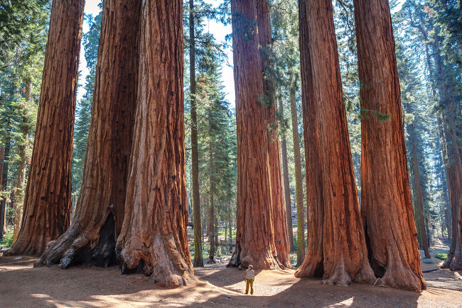
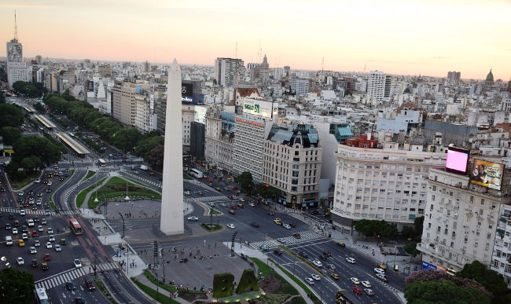
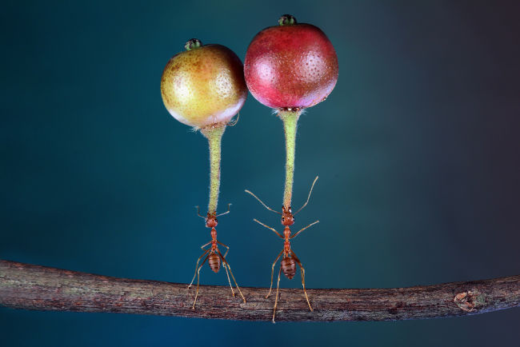

Curiosidades interessantes
- A cada minuto, cerca de 72 horas de conteúdo são enviadas ao site de vídeos Youtube.
- Estima-se que, a cada ano, o monte Everest cresça 4 milímetros.
- A barragem da maior usina hidrelétrica do mundo, a Usina das Três Gargantas, localizada na China, prolongaria a duração do dia em 0,66 microssegundos se operasse em sua capacidade máxima. Isso ocorreria em virtude da enorme massa de água que ela comporta.
- o fenômeno Superlua, calcula-se que o diâmetro lunar possa aumentar em até 14%.
- Há uma lâmpada que permanece ligada continuamente há mais de 113 anos na cidade de Livermore, na Califórnia.
- O cérebro humano é formado por, aproximadamente, 75% de água.
- O cachorro-quente é uma invenção alemã do século XV.
- Alguns animais, como os cangurus, não param de crescer mesmo atingindo a idade adulta.
- A maioria das vacas não consegue descer escadas.
- Em média, um adulto respira 550 litros de oxigênio puro diariamente.
- Estima-se que 4% da população mundial seja canhota.
- A maior palavra da língua portuguesa refere-se a uma doença causada pela respiração de cinzas vulcânicas: pneumoultramicroscopicossilicovulcanoconiótico.
- Sequoias são árvores que podem atingir 115 metros de altura, 12 de diâmetro e cerca de 1400 toneladas, vivendo mais de 4500 anos de idade.. 
- O Brasil é o país que possui a maior comunidade japonesa fora do Japão. Só em São Paulo, moram mais de 600 mil japoneses.
- O calendário da Etiópia é sete anos atrasado em relação aos demais países do ocidente.
- A avenida mais larga do mundo, com 14 faixas diferentes, fica na Argentina. 
- Mais de 10% de toda a biodiversidade do mundo é encontrada no continente australiano.
- A Rússia é o maior país do mundo, ocupando cerca de 10% de toda a terra do planeta.
- Holanda, estima-se que o número de bicicletas ultrapasse três vezes o número de veículos.
- O menor país do mundo é o Vaticano, com cerca de 800 habitantes oficiais.
- O recorde de voo de uma galinha é de 13 segundos.
- Os mosquitos são os animais mais letais do mundo, causando mais mortes humanas do que todas as guerras da história. Esses seres vivos matam cerca de 725 mil humanos anualmente.
- Uma pulga pode saltar até 350 vezes sua altura.
- formigas são capazes de levantar até 50 vezes seu próprio peso. As formigas podem levantar objetos várias vezes mais pesados que seus corpos.
- Todos os mamíferos são capazes de saltar, menos os elefantes.
- Girafas não têm cordas vocais.
- A língua de uma baleia-azul pode pesar até 3,6 toneladas, o equivalente ao peso de um elefante médio.
- As borboletas têm cerca de 12 mil olhos.
- O nome oficial do Brasil é República Federativa do Brasil.
- A palavra “brasil” significa “vermelho como brasa”.
- O Brasil é o quinto maior país do mundo.
- O Brasil é o maior produtor de café do mundo.
- Brasil é também o país que mais desmata a natureza em todo o mundo.
- O Brasil tem a maior biodiversidade do mundo graças à Floresta Amazônica.
- Das 30 cidades mais violentas do mundo, 12 estão localizadas no Brasil.
- Toda moeda circulante e oficial do Brasil é produzida na Casa da Moeda, no Rio de Janeiro.
- Tocantins é o estado mais novo do Brasil, fundado em 1988.
- A feijoada é considerada o prato nacional do Brasil.
Em virtude da enorme massa de água represada, a Usina das Três Gargantas tem capacidade de alterar o movimento de rotação da Terra.
Curiosidades sobre o mundo
Avenida 9 de Julho, a maior do mundo, fica na Argentina.
Curiosidades sobre animais